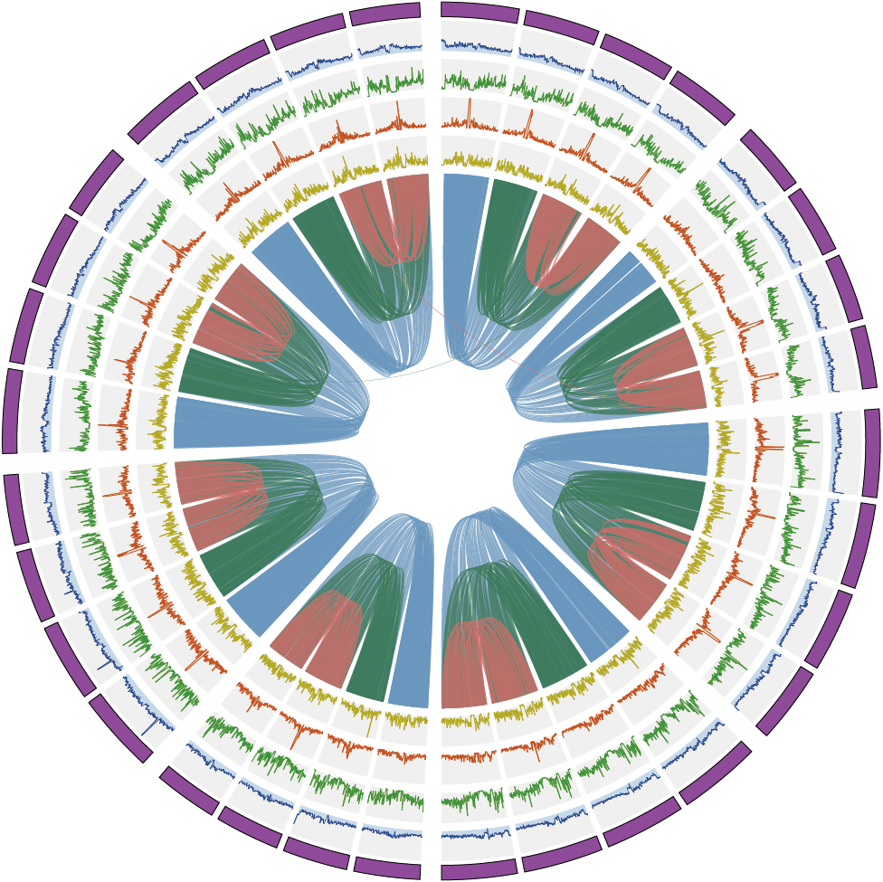

Haplotype-resolved reference genome assembly for autotetraploid alfalfa
Developed an integrative pipeline combining different Hi-C scaffolding tools to generate a high-quality haplotype-resolved genome for autotetraploid alfalfa, uncovering substantial structural and sequence divergence among its four haplotypes, with this pattern conserved across other autotetraploid species.